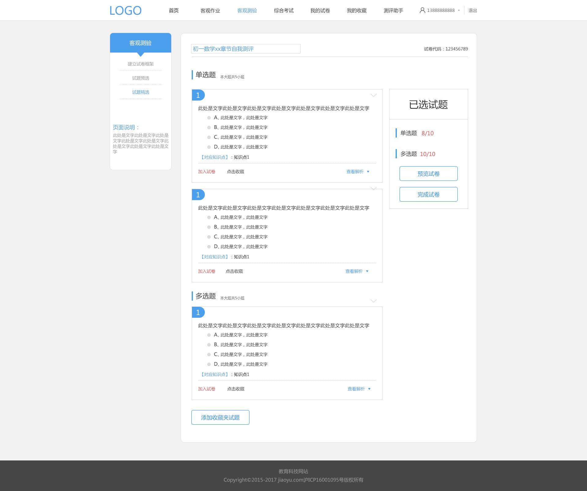

测评分析

此处名称来自于上一步“试题预选”，在此仍然可以修改。
此文字（加入试卷）默认显示为蓝色，被选中后显示为红色文字为（取消试卷），再次选中则返回蓝色
此处动画显示，点击“加入精选”则有一个动画（“＋1”）显示，右侧已选试题处对应的题型后面的数字，同时＋1
再次点击“取消试卷”，则有一个动画（“－1”）显示，从相反方向运动。同时右侧“已选试题”处对应的题型后面的数字－1
点击“加入试卷”，该试题会立即被加入到该份试卷的精选中，不会因为本页面整体或者部分的刷新而从试卷精选中删除
＋1、－1动画，文字变色前端需开发此交互
点击此处，则显示本试题的正确答案和试题解析，以弹出框形式出现，不影响下面题的格式排列。
试题解析为图文混排格式；

点击此处，弹出新的页面“我的收藏夹”，在此新的页面中，各个题可选，选择确定后，被选中的试题加入此页面
从收藏夹加入的试题，进入此页面后，“加入试卷”默认显示为蓝色，即并没有被正式加入试卷，仍然为待选状态。但是“加入收藏”显示为红色，表示已经加入“收藏夹”

点击此处，为新开页面B2.4“试卷预览－客观测验”，条件是，上方题目的选择已经选满，否则提示试题未满
如试题未满，［完成试卷］按钮变为灰色，不可点击。

此“已选试题”框为浮动出现，一直保留在屏幕底部固定的位置（高于版权声明框），
不会因为页面的过长，而看不到；前端需开发此交互
此文字（加入收藏）默认显示为蓝色，被选中后显示为红色文字为（取消收藏），再次选中则返回蓝色
点击“加入收藏”，该试题会立即被加入我的收藏夹中，不会因为本页面整体或者部分的刷新而从我的收藏夹中删除
文字变色前端需开发此交互
此处显示错误，应该箭头方向向上，默认表示本题为展开状态，如果点击，则对该题题干进行隐藏；展开、隐藏前端需开发此交互
题目编号和下方显示的“加入精选”和“加入收藏”这一行内容不隐藏